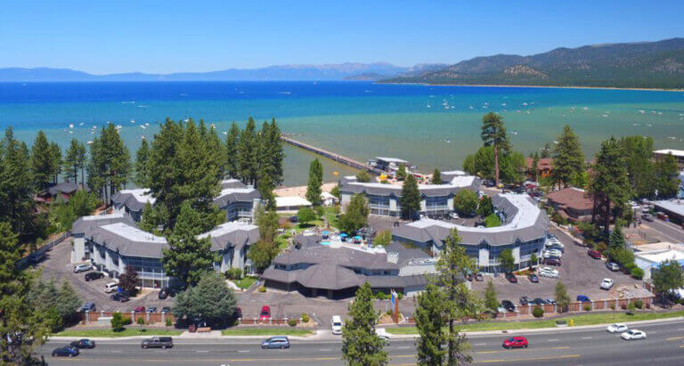
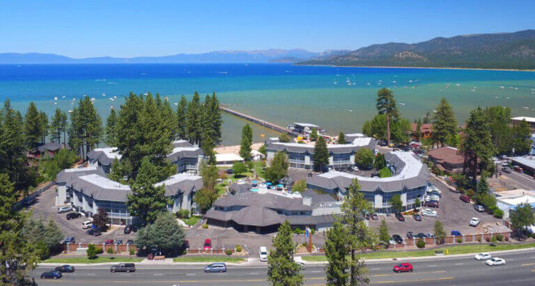

Let's see beautiful view!
Yellowstone


Geographical Location: North America
Yellowstone is the first national park in the United States. It covers over 2.2 million acres, and provides an opportunity to see wildlife and explore geothermal areas. In fact, Yellowstone contains about half the world's active geysers.
These unique opportunities also bring out a lot of bad decisions among the tourists. Every year visitors injure themselves or the wildlife by getting close to the animals. You can see examples of people making bad decisions by visiting Yellowstone National Park: Invasion of the Idiots, Tourons of Yellowstone, or Cowboy State Daily.
Photo Gallery


Lake Tahoe
 

Geographical Location: North America
“When it comes to things to do in South Lake Tahoe, you can shred down the mountain from 10,067 ft. at Heavenly Mountain Resort’s peak or you can dive into the depths of Lake Tahoe. It’s more than 1600 ft. deep, making it one of the deepest lakes in North America. Needless to say, there’s plenty of things to do in Lake Tahoe above and below the surface.”
“All parts of Lake Tahoe are beautiful and have something unique to offer. South Lake Tahoe is popular for its ski resorts like Heavenly, Sierra at Tahoe and Kirkwood ski resorts. South Lake Tahoe is also popular for its restaurants, shopping, casino resorts and vibrant nightlife.”.
Photo Gallery


Niagara Falls


Geographical Location: North America
Niagara Falls is located on the border between Canada and the United States. Connecting Lake Erie and Lake Ontario, Niagara Falls has the highest flow rate of any waterfall in North America.
Niagara Falls draws in thousands of visitors every year, and for good reason. As such, there are numerous things that you can see while you visit the falls, and it is very easy to make a full trip out of seeing this wonderful sight..
Photo Gallery


Grand Canyon National Park


Geographical Location: North America
The Grand Canyon is a breathtaking natural wonder located in Arizona, USA, carved by the Colorado River over millions of years. Stretching over 277 miles long, up to 18 miles wide, and over a mile deep, this iconic landmark showcases intricate layers of rock that tell a complex geological history.
Visitors from around the globe flock to the Grand Canyon National Park to witness its grandeur. Whether they experience it by hiking its numerous trails, rafting in the Colorado River, or simply observing from one of the many overlooks,.
Photo Gallery